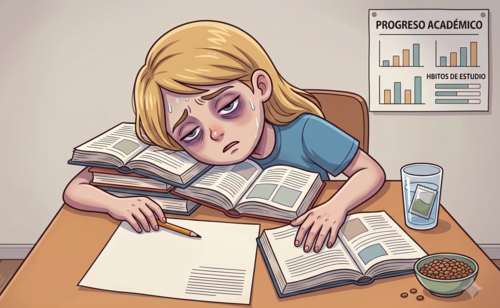

Falta el nutriente
La dieta no aporta suficiente hierro o el cuerpo no lo absorbe bien.
Como empieza
Los globulos rojos llevan oxigeno a los organos. Si hay pocos globulos rojos o poca hemoglobina, el cuerpo trabaja con menos energia. Por eso la anemia puede verse como cansancio, palidez, sueno o falta de concentracion.

La dieta no aporta suficiente hierro o el cuerpo no lo absorbe bien.
La sangre transporta menos oxigeno a musculos, cerebro y organos.
El cansancio, la palidez y la falta de concentracion se vuelven mas visibles.